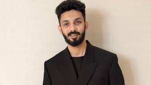
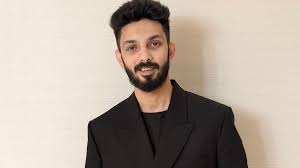

Uppalapati Venkata Suryanarayana Prabhas Raju born 23 October 1979, known mononymously as Prabhas, is an Indian actor who predominantly works in Telugu cinema.He is one of the highest-paid actors in Indian cinema and has been featured in Forbes India's Celebrity 100 list since 2015.Referred to in the media as the "Rebel Star", he has appeared in over 20 films, and has received seven Filmfare Awards nominations, a Nandi Award, and a SIIMA Award.
Anirudh Ravichander born 16 October 1990 , also credited mononymously as Anirudh, is an Indian composer and playback singer who works primarily in Tamil cinema, in addition to Hindi and Telugu films.He is Referred as Rockstar Anirudh by his fans and media. He has won two Filmfare Awards South, ten SIIMA Awards, six Edison Awards and five Vijay awards.